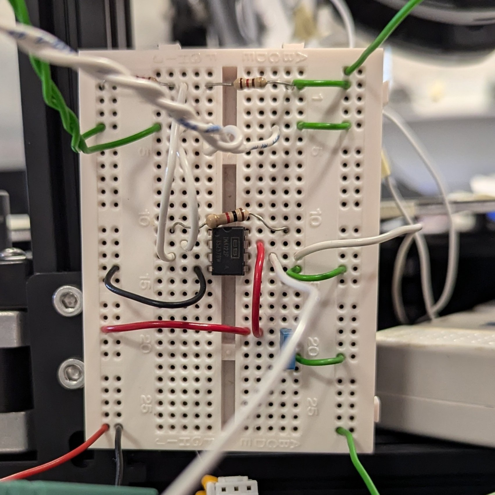
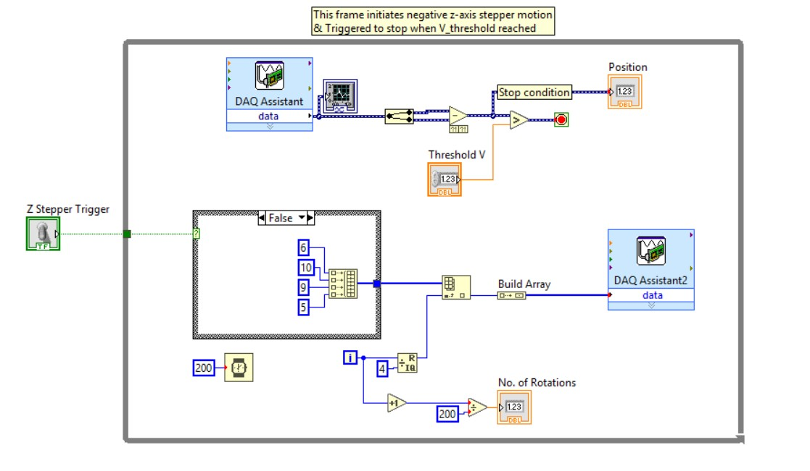
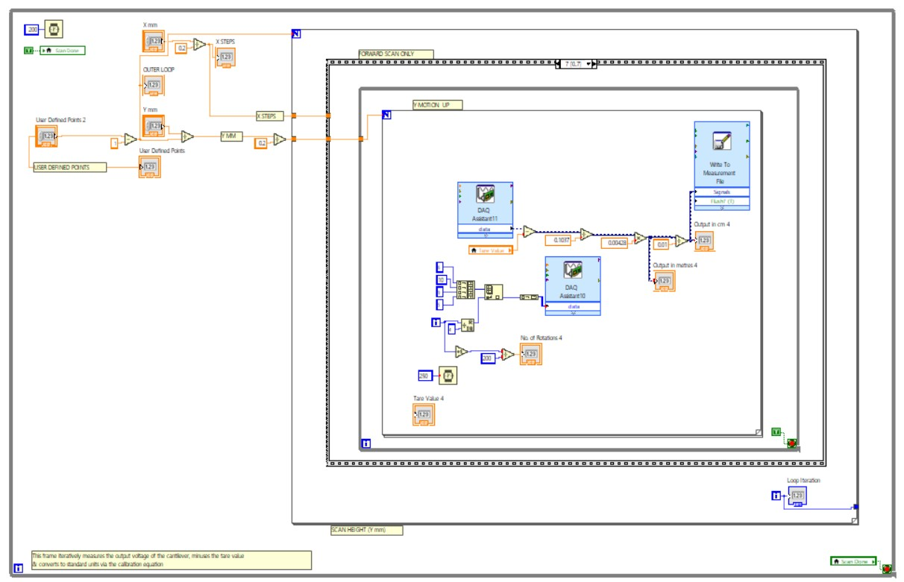
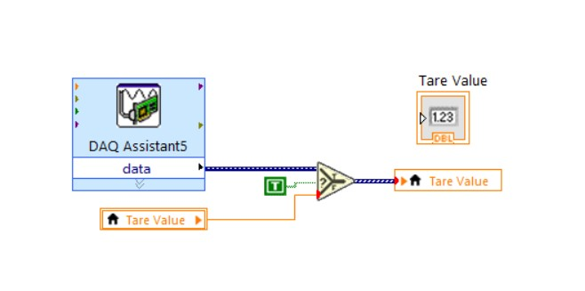
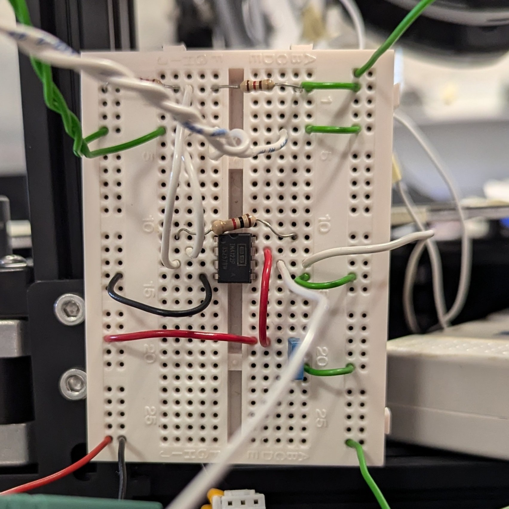
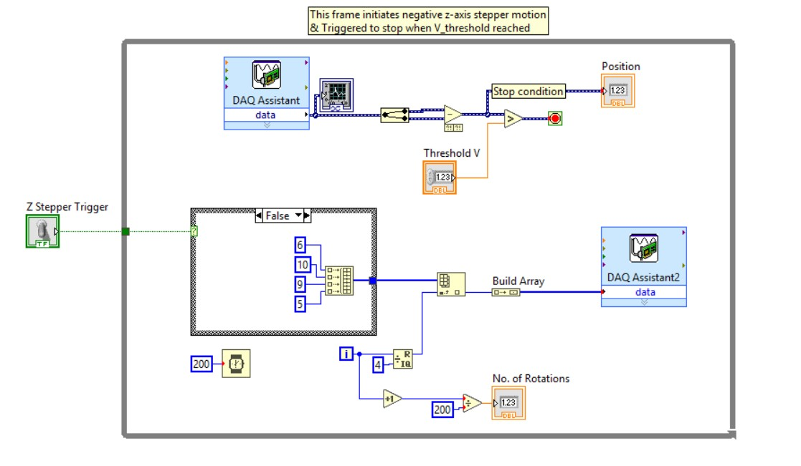
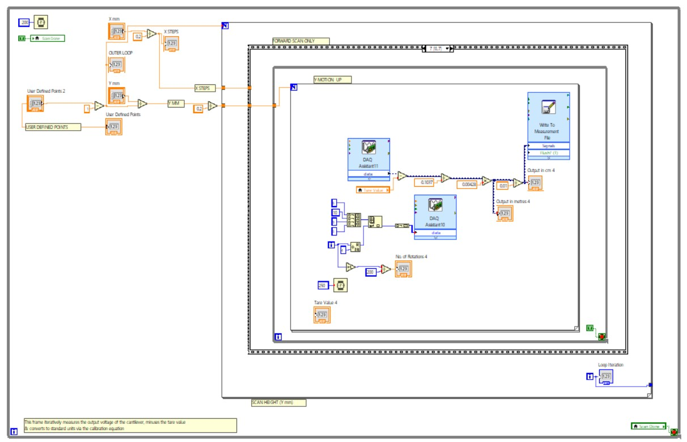
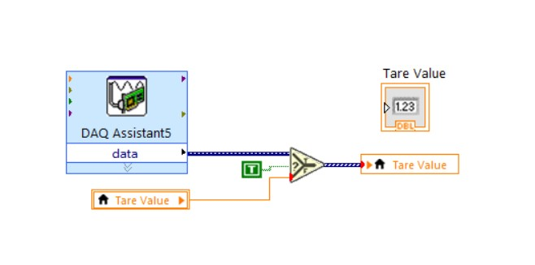

Surface Profilometer
Project Overview
The goal of this project was to design, build, and calibrate a working surface profilometer using a repurposed 3D printer frame as the mechanical base. The device uses a cantilever system with strain gauge feedback to perform precise raster scans of a surface, producing 3D height data that can be visualized in MATLAB.
This setup also incorporated stepper motor control, instrumentation amplification, and LabVIEW integration. The final result was a fully functional proof-of-concept, built from scratch and capable of repeatable surface scans within the expected precision limits. The project balanced mechanical ingenuity, circuit design, and software coordination — all packaged into a compact, student-made metrology system.
Documents
Final Thesis
The thesis offers a full write-up of the project from first principles to final testing. It outlines the design decisions, challenges in strain gauge configuration, amplifier calibration, and signal handling. The document also includes full circuit schematics, mechanical layout, data plots, and reflections on what worked (and what didn’t).
Download PDFProject Logbook
A day-to-day running log of the project from beginning to end — including notes on testing, wiring, motor tuning, amplifier troubleshooting, and general progress updates. This isn’t just a list of dates: the logbook was kept with enough detail that it doubles as a technical diary of the development process.
It includes sketches, early circuit ideas, failed tests, working solutions, and thoughts on component choices and next steps.
Download PDFProject Proposal
The proposal sets the scene for the project and lays out what we planned to build, why it mattered, and how we were going to go about it. It includes component overviews, a timeline, theoretical justifications, and anticipated outcomes.
While some things changed along the way (as they always do), the proposal served as the foundation for the final result.
Download PDFPresentation Slides
These slides were created for an interim bench assessment partway through the build. They cover the overall plan, what had been completed at that stage, issues encountered with calibration and movement, and plans for finishing the instrument.
The tone was aimed at communicating progress and demonstrating technical understanding rather than just showing results.
Download PowerPoint
Project Timeline
Below is the provisional Gantt chart created at the start of the project, outlining the intended timeline and deliverables. While things shifted along the way, the chart helped define clear weekly milestones across design, build, testing, and documentation.

Gallery
 






